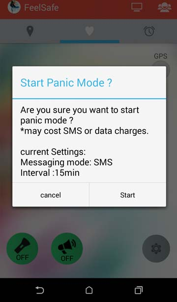
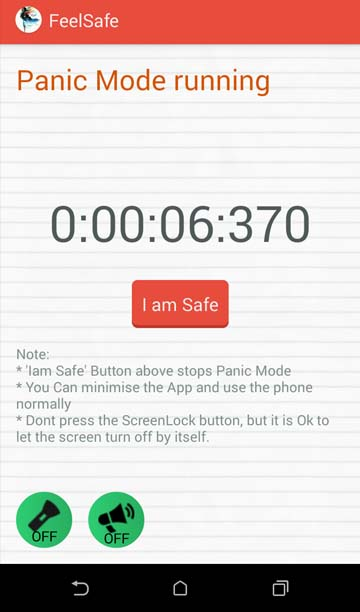
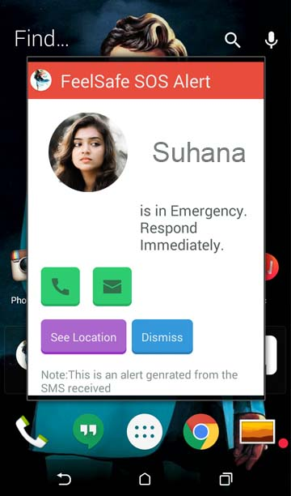

The Main feature of the FeelSafe is the PANIC MODE.
When you start PANIC MODE an alert message with your location is sent to all of your app contacts for every interval, set in settings, till the PANIC MODE is stopped.
By default, the message is sent through SMS for every 15min. You can change these from settings button in home tab.
On starting the PANIC MODE a dialog box appears asking for confirmation. It also shows the current settings of the panic mode.

On starting Panic mode, messages are sent to all app contacts for every 15min or the interval set, till you stop the Panic Mode.

If the reciever also has FeelSafe app a FeelSafe SOS Alert is shown asking them to respond immediately.

.
To stop PANIC MODE you need to press IAM SAFE button. On stopping a Safe-message is sent to all app-contacts.